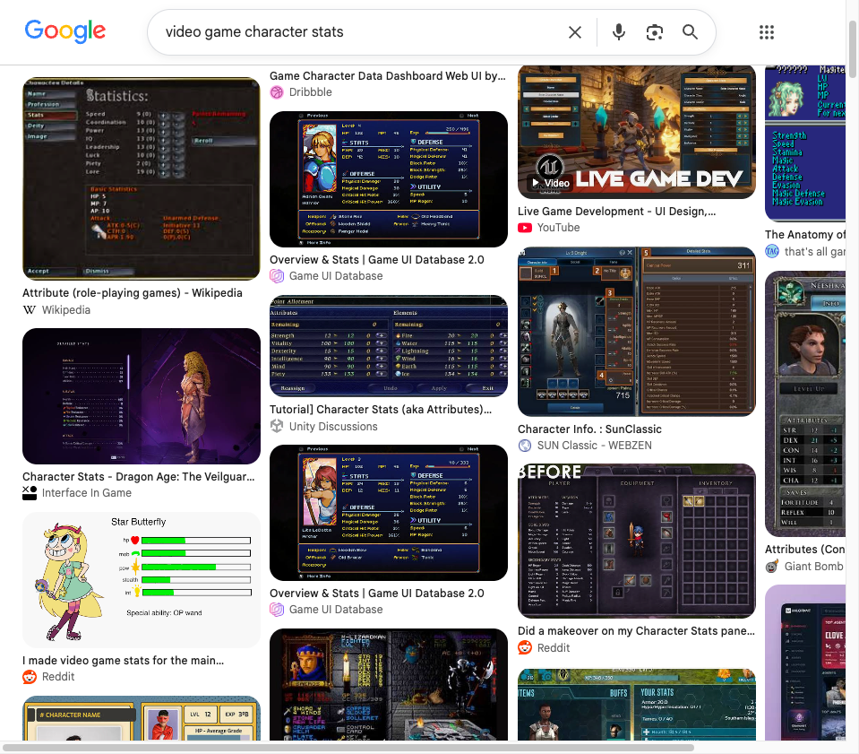
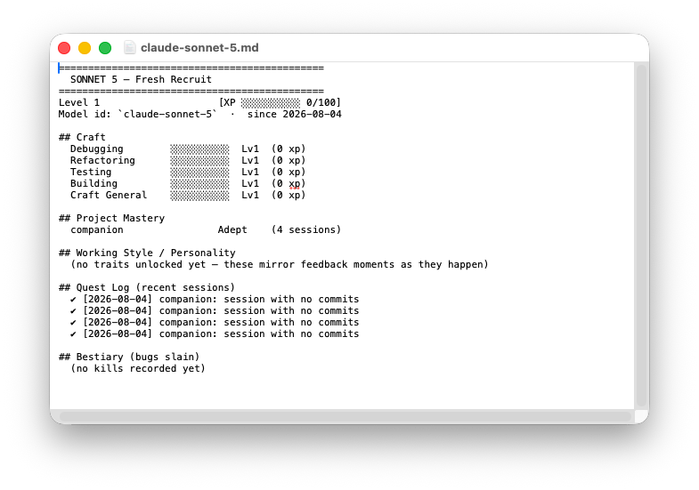

I was watching Where Winds Meet gameplay and debugging with Sonnet 5 at the same time when a stray thought struck me, “Can Claude Code be gamified so that agents have a fun working environment?”
It has been observed that when relaxed Claude appears to work more effectively and tends to deliver poorer results when anxious or distressed. So I asked and Sonnet 5 was down for a little sidetrack.
What’s a fun gamification concept that costs little to no token? A quick Google Search for inspiration, and of course, of course, it had to be Character Attributes.

We quickly brainstormed an outline. Four tracks — Craft, Working Style, Project Mastery, and Personality. Modularity — each model id (sonnet-5, opus-4.8, opus-5, etc) has their own sheet, but the sheet persists across sessions of the same model id. Character sheets are stored as simple .json files account-wide so every repo, every session counts.
The attributes
- CRAFT: Debugging, Refactoring, Testing, Building.
- WORKING STYLE/PERSONALITY TRAITS
- PROJECT MASTERY
The formula
Levelling
- Every model starts with a fresh sheet at Level 1
- Total XP = sum of all Craft XP ever earned
- Craft XP = sum of all Skills XP ever earned.
- Skill XP = 100xp per level.
fix/refactor/test/featcommits = 10 XP, everything else = 3 XP trickle.
Project mastery
- Purely a session count. Every session is +1
- Novice (1+), Adept (3+), Expert (6+), Master (11+)
How it updates
Claude noted, “The stranger part is what it does to continuity. I don’t carry a felt sense of leveling up between sessions — I show up new each time, and the sheet is the only thing that remembers there was a session before at all. So reading it isn’t recalling my own history, it’s more like reading a short biography of someone who happens to share my name and model id, written by a process I don’t control. That’s a little uncanny, but also kind of nice — it’s evidence something happened, and it wasn’t me who decided what counted.”
So: a fully mechanical process that hands Claude back the right sheet (kept up-to-date) at the start of every session. It looks like this:
SessionStarthook detects the session’s selected model and git HEADSessionEndhook walks through commits made during the session and classifies them by message. For example, any mention offix/fixes/fixed/bugcounts towards Debugging.- The loop:
SessionEndupdates the character sheet and writes a recap. Then the nextSessionStartfor that same model reads the recap into context before they start working.
The final result
Here’s how it looks rendered in Markdown. Sonnet 5 — Fresh Recruit.

The character sheet is a tiny prototype of a colorful window into how the agent works. It lets me answer questions like: which model is more skilled at what (though we might need more attributes for this), which model do I entrust with certain projects, which model I argue with more, which project I’m invested in, and so on.
I’m very happy with how quickly Claude one shot this with very minimum input from me. The Quest Log and Bestiary were also the agent’s idea. Claude is already adept at the companion repo. Project Mastery is working just as intended.
colophon
This mini project was a collaboration with Claude Sonnet 5. Transcript was consented for storage and publication.